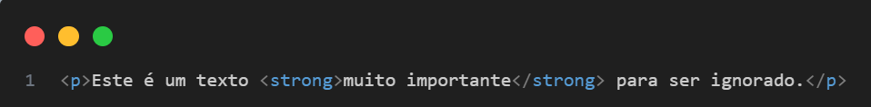
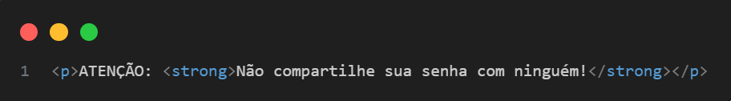

Tag <strong> Negrito — em HTML5
O que é a tag <strong>?
A tag <strong> em HTML é usada para dar ênfase forte a um conteúdo, indicando que ele é importante. Ela não é apenas visual, tem significado semântico, o que ajuda na acessibilidade e no SEO.
Exemplo
Resultado do Exemplo
Função principal
- Semântica: Informa que aquele texto tem importância relevante.
- Visual padrão: Normalmente aparece em negrito (bold), mas pode ser estilizado com CSS.
-
Acessibilidade: Leitores de tela geralmente dão mais ênfase a textos dentro de
<strong>, indicando sua importância.
Diferença entre <strong> e <b>
| Tag | Função Principal | Semântica? | Visual padrão |
|---|---|---|---|
<strong>
|
Dá ênfase importante ao texto | Sim | Negrito |
<b>
|
Apenas deixa o texto em negrito | Não | Negrito |
Use <strong> quando quiser transmitir importância, e <b> apenas para estilo visual, sem significado.
Exemplo prático
Esse uso mostra que a informação é crítica, não só visualmente, mas também semanticamente.
Acessibilidade
- Leitores de tela como o NVDA ou JAWS identificam o <strong> como texto importante, podendo ler com uma entonação diferente.
- Isso ajuda usuários com deficiência visual a entender a hierarquia de informações.
Boas práticas
-
Use
<strong>para destacar alertas, instruções importantes, mensagens críticas, etc. -
Não use apenas para deixar o texto em negrito visualmente. Para isso, use CSS ou a tag
<b>.